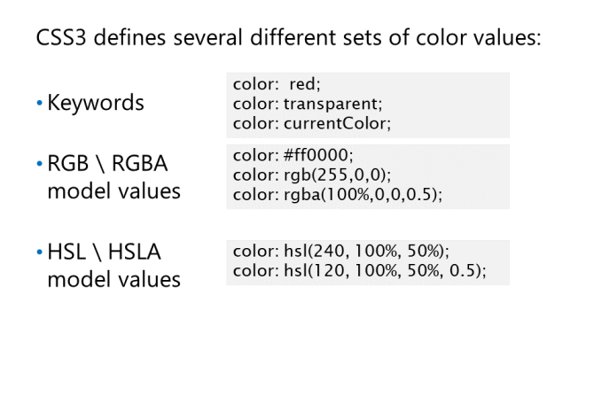
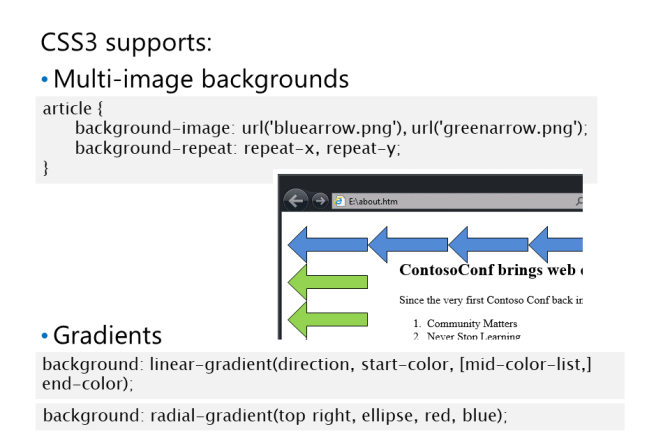
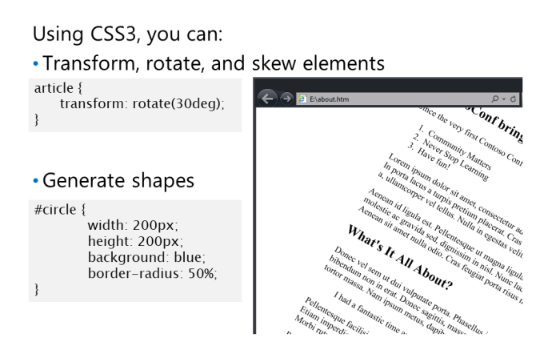

Określanie wartości kolorów
właściwości color:
Dowolne ze 147 kolorów zdefiniowanych. Na przykład red lub green.
czerwony-zielony-niebieski (RGB) określona w trzy- lub sześciocyfrowym zapisie szesnastkowym, triplet
liczb całkowitych/wartości procentowych.
color: #ff0; /* #rgb */
color: #ffff00; /* #rrggbb */
color: rgb(255, 255, 0);
color: rgb(100%, 100%, 0%);
czerwony-zielony-niebieski-alfa (RGBA) określona jako triplet liczb całkowitych/
wartości procentowych plus wartość krycia od 0 do 1, gdzie 0 jest całkowicie przezroczyste i 1
jest całkowicie nieprzezroczysty.
color: rgba(255, 255, 0, 0.2); /* mostly transparent yellow */
color: rgba(100%, 100%, 0%, 0.8); /* mostly opaque yellow */
transparent - ma taką samą wartość jak rgba (0,0,0,0).
color: transparent;
Hue-saturation-lightness (HSL) określona jako triplet liczb. Pierwszy to liczba całkowita
wartość od 0 do 360 wskazująca kąt koła kolorów (0 = czerwony, 120 = zielony, 240 = niebieski).
Druga to procentowa wartość nasycenia, gdzie 0% to odcień szarości, a 100% to pełny kolor.
Trzecia to także wartość procentowa jasności, gdzie 0% to czerń, 100% to biel, a 50% to norma
color: hsl(60, 100%, 50%);
A hue-saturation-lightness-alpha (HSLA) określona jako kwadruplet liczb. Pierwszy
trzy są modelami HSL, a czwarta to ta sama wartość krycia między 0 a 1 jak w
model RGBA.
color: hsla(60, 100%, 50%, 0.2); /* mostly transparent yellow */
inherit - Oznacza to, że element powinien odziedziczyć tę samą wartość koloru co jego element nadrzędny
element.
currentColor. Oznacza to, że element powinien odziedziczyć tę samą wartość koloru co jego element nadrzędny
element. Writing color:currentColor is the same as writing color:inherit.
Multi-Image Backgrounds

background-position - aby przesunąć każdy obraz wokół siebie
Regułę ze zdjęcia można
też napisać w ten sposób:
article {
background: url('bluearrow.png') repeat-x, url('greenarrow.png') repeat-y;
}
Gradienty
2 Typy gradientu:
linear gradient, który jest stopniową zmianą koloru z początkowego na końcowy.
background: linear-gradient(direction, start-color, [mid-color-list,] end-color);
Parametr direction(kierunku) jest opcjonalny i jest ustawiany w stopniach; domyślnie jest to 180 stopni.
Możesz też
ustaw dowolną liczbę kolorów pośrednich między początkiem a końcem.
html {
background: -ms-linear-gradient(30deg, lightblue, green, yellow);
}
Gradient promieniowy, który jest stopniową zmianą koloru od centralnego punktu w kolorze początkowym na zewnątrz
w kształcie koła lub elipsy do koloru końcowego na krawędzi kształtu. Dowolna liczba
kolorów pośrednich.
background: radial-gradient(position, shape, start-color, [mid-color-list,] endcolor);
Parametr position jest opcjonalny. Jego wartością domyślną jest center. Parametr shape(kształt) jest również opcjonalny.
Jego wartością domyślną jest circle; jedyną inną opcją jest ellipse.
html {
background: -ms-radial-gradient(top right, ellipse, red, blue);
}
Transformacje elementów

translate3d(x,y,z) : Przesuwa cały element o odległość x wzdłuż osi x, y wzdłuż osi y,
i z wzdłuż osi z. Wartości x, y, z mogą być dowolną prawidłową jednostką miary.
translate(x,y) : 2d variant of translate3d().
translateX(x), translate(y), translateZ(z) : Single axis variants of translate3d().
scale3d(x,y,z) : Skaluje rozmiar elementu współczynnik x wzdłuż osi x, y wzdłuż osi yi z
wzdłuż osi Z. Wartości dla x, y i z muszą być liczbami dodatnimi (użyj wartości dziesiętnej mniejszej niż 1
zmniejszyć element w danym wymiarze).
transform: scale3d(2, 4, 0.5);
scale(x,y) : 2d variant of scale3d().
scaleX(x), scaleY(y), scaleZ(z) : Single axis variants of scale3d().
rotate3d(x,y,z,a) : Obraca element w 3d o kąt a wokół punktu o współrzędnych (x, y, z).
Kąt a jest wartością w stopniach.
rotate(a) : Rotates an element in 2d by angle a around its center.
transform: rotate(30deg);
skew(a,b) : Pochyla element o kąt a wzdłuż osi x i kąt b wzdłuż osi y. a,b są
wartości w stopniach od 0 do 180.
transform: skew(15deg, 15deg);
skewX(a), skewY(b) : Single axis-variants of skew().
Zauważ, że większość współczesnych przeglądarek obsługuje transformacje, ale tylko z dołączonymi prefiksami dostawcy
transform: rotate(30deg);
-ms-transform: rotate(30deg); // IE10
Rysowanie kształtów
kwadrat
koło
trójkąt